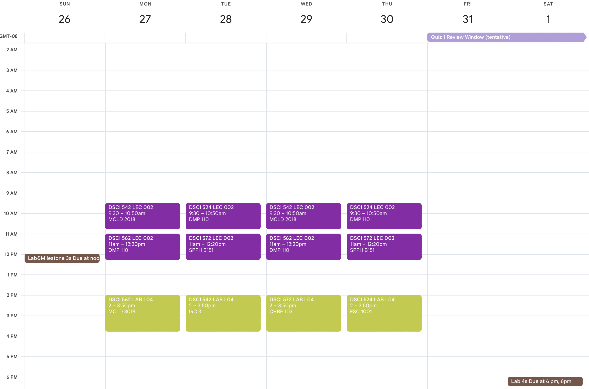
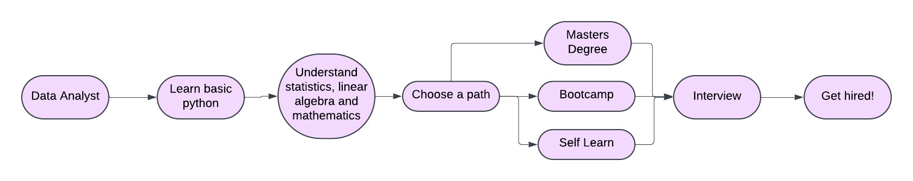

Transitioning from Data Analyst to Data Scientist: Where to Learn Foundational Skills
A guide to transition from a data analyst to data scientist and which important skills to pick. And 3 ways to fill in the gaps in your knowledge and how effective each is.
Introduction : Why Transition to Data Science?
Data science is rapidly growing. According to the U.S. Bureau of Labor Statistics, employment from 2023 to 2033 is expected to grow by 36% with close to 20000 new jobs projected yearly. The median pay is approximately $108,000 making data science a viable choice.
As a data analyst, you may be wondering how the role of a data scientist differs from a data analyst and why you should care? The difference according to this blog is that data science roles are more hands-on in terms of building predictive modeling tools, whereas data analysts are more concerned with generating actionable insights from data. If these reasons are compelling enough for you to consider making the transition, keep reading on! This blog post will outline where you can learn the foundational skills to become a proficient data scientist.
Laying the Foundation: Key Prerequisite Skills for Data Science
If you are working as a data analyst, you likely already have experience with relational databases, such as SQL as well as perhaps using dashboard preparation tools such as Power BI or Tableau.
Before we go any further, I think it is important to share a list of prerequisites that from personal experience will make the transition easier.
The first skill that I recommend is basic coding. A good starting point would be learning how to use Python to code. Once you have a foundational understanding of coding with Python, you can learn how to use Python for data wrangling. There are plenty of free resources for both of these.
Next, if you do not have any previous linear algebra experience as well as calculus, you want to make sure you can understand matrices. This will be useful later on when you delve into machine learning.
You want to know how basic statistics works, as according to this blog and my own experience, the above prerequisites will give you a foundational understanding of data science concepts.
This road map contains a list of resources with the necessary prerequisites and related roadmaps if you are interested. The options presented are low/no cost and the roadmap is often updated.
Do note that if you plan on applying to a master’s degree program, you will likely need an undergraduate degree completed and a combination of these courses at an undergraduate level to be admitted. This is something that you need to consider as an additional cost and time commitment.
Core Foundational Data Science Skills Required
Once you have a good foundational understanding of the prerequisites, you may be wondering what was the point? Well, a lot of the additional skills that you need to pick up to become a data scientist would assume you have basic knowledge of these skills already. Let’s delve into what additional skills may be required.
Data Structures and Algorithms
Classic data structures and algorithms. It is important to learn because it can be applied to your future job because learning data structures and algorithms could be the difference between your code taking one minute to run versus it taking thirty minutes to run according to this blog. This video is an excellent place to learn the basics and you can practice on LeetCode.
Machine Learning
Learning about different types of machine learning models, as well as the concepts behind these models is essential in landing a data scientist job. Websites like Kaggle often have practice data sets to work on and machine learning competitions. A solid understanding in these topics can also open up the door for machine learning engineering positions according to this Coursera article.
More Advanced Statistics
Probability and statistics are foundational to a data scientist’s toolkit. As a data scientist, you frequently conduct A/B testing and apply statistical models to interpret and fit data, and a solid understanding of the theory behind these methods will help you assess the reliability and validity of your results.
Data Visualization in Python
Since you likely already have experience using Power BI or Tableau, it is worth learning a new data visualization library for Python. Some of the common libraries in Python include Altair, Seaborn and Plotly. The one you practice on does not really matter because a lot of the syntax for different libraries can be easily learned once you have the basics down.
How to Fill in Knowledge Gaps: Three Different Methods
The amount of foundational skills that you may need to pick up may seem overwhelming right now! With a lot of discipline and hard work, it is not too difficult to learn them.
This blog post will be broken up into three different paths that you can take to learn the foundational skills required. A lot of what I talk about in this section comes from my own personal experience since I have followed some of these paths before.
Master’s Program
A master’s in data science degree program may be one of the best ways to pick up a lot of skills needed to transition into the industry. There are a wide variety of universities/colleges which offer master’s in data science degrees. It may seem overwhelming because of the amount of schools there are, but choosing a school will come down to personal preference. Some important considerations could be tuition cost, living expenses, whether the program offers an internship and method of delivery. Ideally, a good school will have a combination of the recommended foundational courses mentioned above as well as additional courses. Doing your own research for different programs as well as keeping up with job postings to see what is required is an effective way to help you make your decision.
One of the benefits of attending a master’s degree program is that it gives you access to alumni and classmates to leverage for networking opportunities. Depending on the specific school you attend, you will also be given the opportunity to practice your skills in collaborative settings. This is difficult to replicate if you are self-learning.
A negative about attending a master’s degree program may be tuition fees and loss of income from attending school. Here is what a typical lab/lecture schedule at UBC looks like. Do plan to spend a few hours each day after classes to work on assigned labs.

You likely also need to adhere to strict deadlines, which means that you may need to reprioritize your time effectively and be very disciplined.
Some schools may also offer part-time programs, allowing you to continue working at your job and pursuing the degree part-time. Do note that if you do this, you might not have a lot of free time throughout your week.
Bootcamps
A data science bootcamp is also a good way to learn data science skills. Bootcamps are fast-paced and often challenging experiences. Bootcamps allow you to pick up the necessary skills to be job-ready in the field that you are interested in. Boot camps are usually full-time commitments and can be completed in as little as three months. Bootcamps have a dedicated career advisor and a circle of graduates that you can leverage for building connections in the industry.
A lot of bootcamps are expensive and they require a significant time commitment. Another issue that bootcamps have when compared to a master’s degree is that bootcamps do not provide as strong of a theoretical basis as master’s programs would. This may be something to consider depending on your learning style and preferences.
Self Learning Path
A lot of free resources as well as low-cost resources exist to learn data science skills. DataCamp is a website that has interactive videos as well as interactive coding and the yearly fee is around $249 USD. Kaggle also exists for learning and practicing data science concepts and is free to sign up for. This roadmap is also an excellent place to start. I recommend that before you enroll in a master’s or even a bootcamp, you should go through these free resources on your own. This is to help assess whether you’re interested in data science, as bootcamps and master’s programs require a significant time commitment and financial investment.
These resources are ideal for individuals with limited financial resources who want to explore transitioning into the industry and developing new skills, all while learning at their own pace.
From personal experience, in the current job market, it is difficult to get hired as a self-taught data scientist. Most job postings require a minimum of a master’s degree according to this DataCamp blog. In terms of networking, it would be a lot more difficult to network with other professionals unless you have a solid network already established at your current position. It is also difficult to replicate the experience a master’s degree or Boot Camp would give you in terms of collaborating with others on a project.
Summary: Choosing Which Learning Path to Take
Regardless of which path you take, each of them have their pros and cons. Here is a summary table of some of the main points that I mentioned.
| Learning Path | Cost | Time Commitment | Networking Potential |
|---|---|---|---|
| Master’s Program | High | 1-2 years on average | High |
| Bootcamps | Medium-High | 3-6 months on average | Medium |
| Self-learn | Low/Free | Flexible | Low |
Table 1: Summary table of the three learning paths you can take.
Final Tips
- It will be a long process, and it can often be discouraging or it may be difficult to stay motivated. If you experience burn out, try to take a break if you can, as well as surround yourself with peers who may be in the same position as you.
- A lot of social media data science communities are a good place to meet like-minded folks such as r/datascience.
- A lot of the advice is very general, if you have a specific role or company in mind, it may be better to focus on what you know they would want. You can find out by looking at job postings as well as connecting with people who work at these companies.
- Data science is a rapidly changing field, a lot of packages or even new tools may come out from the time you start the process to the day that you landed the job. It is more important to have a good foundation in a lot of the basics such as coding, data structures and algorithms and machine learning versus learning how to use the newest package at all times.
- Sadly, there was only so much I could cover within this blog post. The interview process and making connections is basically a whole monster on its own and I felt like I couldn’t do it any justice in this blog post. A good resource that I recommend for those topics is this book.
Conclusion
It can be a difficult and often daunting transition into a more specialized discipline. Following what was laid out here is a good starting point for learning new data science skills. Here is a summary chart of everything that was covered in this blog post!

Good luck on the journey!
References
[1] U.S. Bureau of Labor Statistics, Data Scientists (2023), https://www.bls.gov/ooh/math/data-scientists.htm
[2] DataCamp, Data Analyst vs Data Scientist: A Comparative Guide (2024), https://www.datacamp.com/blog/data-analyst-vs-data-scientist-a-comparative-guide
[3] Maggie @ DataStoryteller, How to Pick a Masters Program for a Career in Data Science (2023), https://data-storyteller.medium.com/how-to-pick-a-masters-program-for-a-career-in-data-science-def0263107ec
[4] Roadmap.sh, AI/Data Scientist Roadmap (2025), https://roadmap.sh/ai-data-scientist
[5] GeeksforGeeks, Why Data Structures and Algorithms Are Important to Learn (2024), https://www.geeksforgeeks.org/why-data-structures-and-algorithms-are-important-to-learn/
[6] FreeCodeCamp, DSA in Python – Full Course (2021), https://www.youtube.com/watch?v=pkYVOmU3MgA&t=2277s&pp=ygUNZHNhIGluIHB5dGhvbg%3D%3D
[7] Coursera, What Is a Machine Learning Engineer? (2024), https://www.coursera.org/articles/what-is-machine-learning-engineer
[8] DataCamp, How to Become a Data Scientist (2024), https://www.datacamp.com/blog/how-to-become-a-data-scientist
[9] Reddit, r/datascience (n.d.), https://www.reddit.com/r/datascience/
[10] N. Singh and K. Huo, Ace the Data Science Interview: 201 Questions to Help You Land Your Dream Data Science Job (2021), https://www.amazon.ca/Ace-Data-Science-Interview-Questions/dp/0578973839